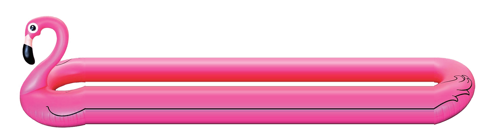
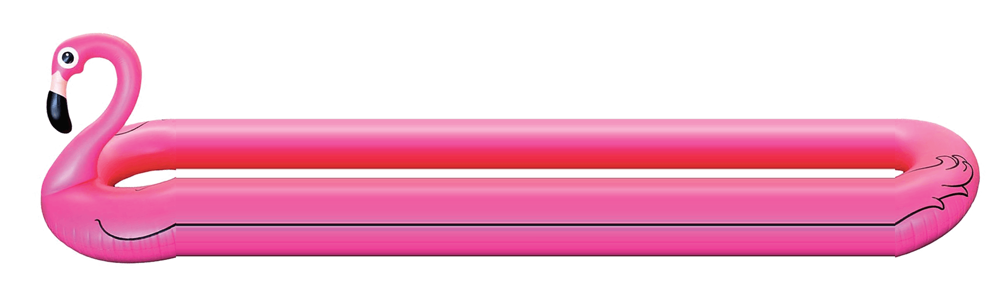

The Sun God Festival is a student-curated, daylong music and arts festival at UC San Diego. Named as one of Live Nation’s “Top 5 College Concerts That Should Be Actual Festivals”, the Sun God Festival is continuously reimagined to deliver students with thrilling moments and life-long memories from live performances by national touring artists, diverse food vendors, vibrant art and décor, and interactive brand activations.
Learn MoreRegistration
 

Registration is now OPEN and closes on April 24th at 11:59PM! Undergrads who've attended UCSD for a minimum of one quarter can register to attend. Graduate students will need to purchase a ticket at the UCSD Box Office.
Register